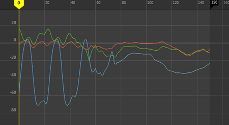
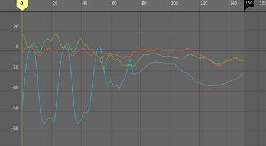
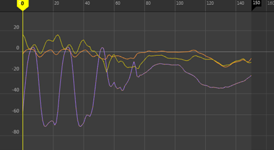
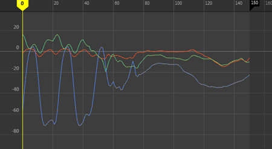
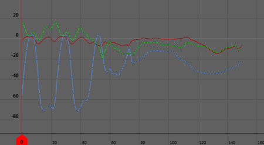

主题涵盖预设颜色和视图设置，一键单击即可更改“曲线图编辑器”(Graph Editor)的外观。您可以在五个主题中任选其一，这些主题旨在为您提供舒适且便于访问的工作区。
在“曲线图编辑器”(Graph Editor)菜单栏中，选择“视图 > 主题”(View > Themes)来为您的工作区选择下列主题之一：
- 深色(Dark)
- （默认）此主题的深色背景使您易于阅读曲线。

- 浅色(Light)
- 此主题为对比的关键帧及其顶部曲线提供浅色背景，从而可以轻松使用更长时间。如果要从具有类似浅色主题的其他软件包进行过渡，这些设置会很有帮助。

- TRS 不同(TRS Distinct)
- 此主题使用颜色来帮助您识别平移、旋转和缩放曲线。X、Y 和 Z 轴上的九个不同平移、旋转和缩放曲线分别使用不同的颜色，从而只通过颜色即可轻松地识别特定曲线。

- 色觉障碍兼容(Colorblind Compatible)
- 此主题使患有常见色盲症的用户能够轻松区分颜色。

- 经典(Classic)
- 此主题是先前版本 Maya 中提供的旧版“曲线图编辑器”(Graph Editor)视图。
